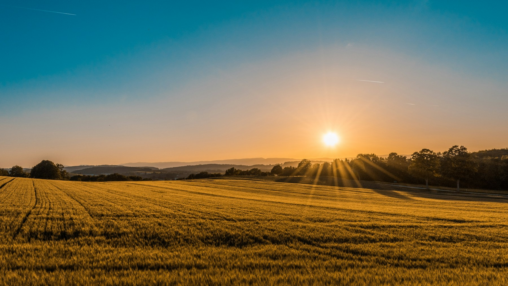

01
У каждого поля
своя история.
Культура, площадь, осмотры и задачи.
Вся история участка — в одной карточке.
Малиновый участокМалина · 2,5 га
Южное полеЧеснок · 1,2 га
Яблоневый садЯблоня · 1,8 га
Ваши поля, задачи и план ухода — в одном месте.
Чтобы каждый день в хозяйстве
начинался с понятного следующего шага.

Меньше разрозненных записей.
Больше внимания тому, что растёт.
Культура, площадь, осмотры и задачи.
Вся история участка — в одной карточке.
Назначайте и переносите работы.
Просрочки и выполненное всегда под рукой.
Рассчитайте объём для своего поля
и добавьте полив в календарь.
Пример расчёта, не рекомендация
Откройте хозяйство утром: посмотрите план, выберите участок и решите, с чего начать.
Зайти в демо-хозяйство Поля и задачи можно менять.Название, культура, площадь и дата посадки. Основа вашего хозяйства готова.
Запишите состояние растений и назначьте следующий шаг. Выберите день, время и приоритет.
Отмечайте выполненное, переносите сроки и следите за просрочками. История всегда под рукой.
Что уже можно попробовать
и куда растёт AgroLife.
Для фермеров и небольших агропредприятий, которым нужен понятный ежедневный план работ. Первую версию предлагаем проверять на ягодных и овощных хозяйствах Казахстана.
Сейчас это интерактивный прототип: можно добавлять поля и задачи, работать с календарём и считать объём воды. Аккаунтов и серверной синхронизации пока нет. Данные сохраняются только в вашем браузере.
Прогноз погоды пока не подключён. Стадию и состояние растений вы отмечаете при осмотре, а статусы полей рассчитываются по журналу и задачам. Асыл работает по локальным сценариям: показывает ваш текущий план, просрочки и наблюдения. AI и агрономические назначения не подключены.
Да, сайт и демо-кабинет адаптированы для телефона, планшета и компьютера. Данные между устройствами пока не синхронизируются. Их можно выгрузить в JSON через раздел «О проекте» в кабинете.
Прототип доступен бесплатно и без регистрации. Тарифов пока нет — их стоит определять после пилота с хозяйствами и проверки реальной пользы продукта.
Посмотрите, каким может быть ваш день с AgroLife.
Открыть демо-хозяйство Без регистрации. В вашем темпе.